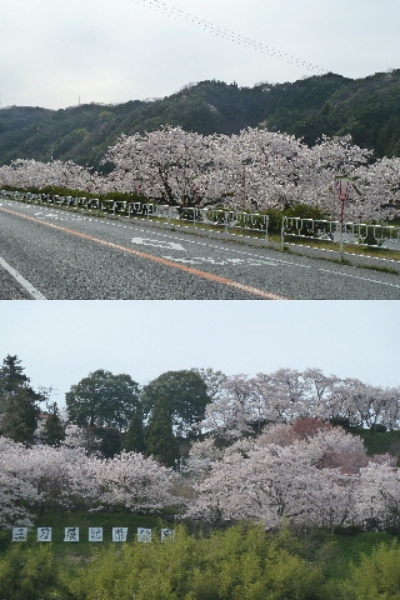

これは三刀屋町の桜。雲南市はいろんなところに桜並木がありますね。
更新日 : 2014/04/07

雲南市は桜の木が多いですね。木次の後は三刀屋の桜を見ました。
上の写真は54号沿いの桜です。パン屋さん「ピノキオ」付近で写真を撮りました。
色んな場所で桜が見れていいですね。でも、あっちでもこっちで桜が咲いているので、どこで見たらいいか迷いますね。
でもちょっと桜を見飽きた。
島根県雲南市三刀屋町 国道54号線沿いの桜
更新日 : 2014/04/07

雲南市は桜の木が多いですね。木次の後は三刀屋の桜を見ました。
上の写真は54号沿いの桜です。パン屋さん「ピノキオ」付近で写真を撮りました。
色んな場所で桜が見れていいですね。でも、あっちでもこっちで桜が咲いているので、どこで見たらいいか迷いますね。
でもちょっと桜を見飽きた。